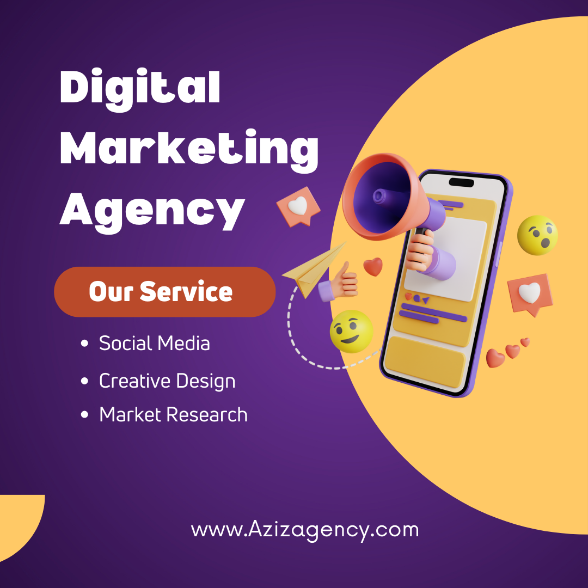

Les agences de marketing digital peuvent travailler avec des entreprises de toutes tailles, des petites entreprises aux grandes entreprises multinationales. Elles peuvent également travailler avec des organisations à but non lucratif, des gouvernements et des particuliers.
Les avantages de travailler avec une agence de marketing digital:
Il existe de nombreux avantages à travailler avec une agence de marketing digital. Les agences de marketing digital disposent d'une expertise et d'une expérience que les entreprises peuvent ne pas avoir en interne. Elles peuvent également accéder à des outils et des ressources qui peuvent être coûteux ou difficiles à obtenir pour les entreprises individuelles.
|  Le marketing digital regroupe l'ensemble des techniques et stratégies de marketing mises en œuvre sur les canaux numériques. Il englobe notamment le marketing des réseaux sociaux, le référencement, le marketing de contenu, le marketing par courriel et le marketing mobile. |
Project management: Project management services help organizations plan, execute, and control projects to ensure that they are completed on time, within budget, and to the required quality standards. |
Social media content is any type of content that is shared on social media platforms, such as Facebook, Twitter, Instagram, and LinkedIn. It can be text, images, videos, or links to other websites. Social media content is used to promote a brand, product, or service, or to connect with friends and family. |
|---|